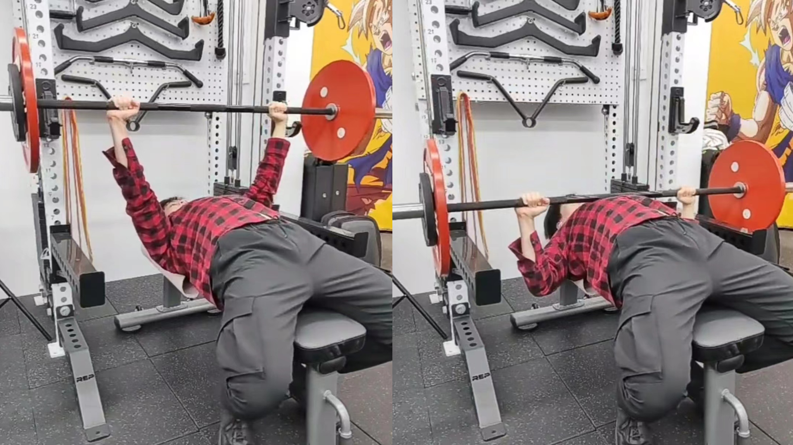
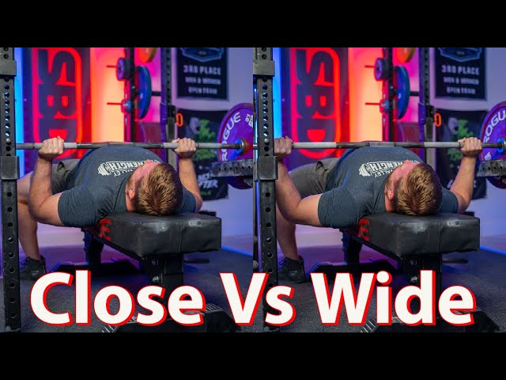
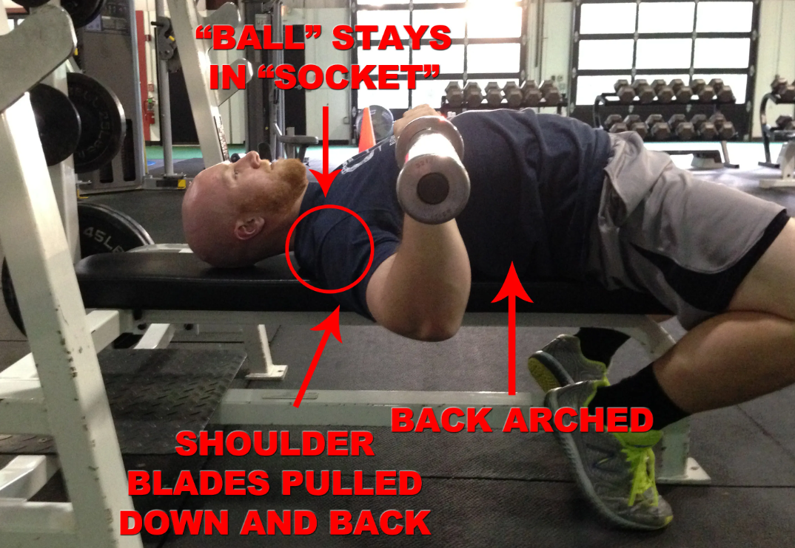

卧推（Bench Press）
卧推是力量举三项中的第二项，也是三项中唯一一项考验纯上肢力量的动作。选手躺在卧推椅上，卧推架上装好杠铃。选手抓握杠铃，双手食指间距不得超过81cm（即杠铃两力环之间的距离），可自行、或由一名加重员辅助出杠。出杠完成，选手与杠铃静止后，裁判给出“Start”口令，选手将杠铃下放至触胸。杠铃在胸上停稳后，裁判给出“Press”口令，选手将杠铃推起，直至手臂伸直，杠铃静止，后裁判给出“Rack”口令，选手即可回杠，完成动作。
握距选择：
一般来说，卧推过程中双手握得越窄，越能利用到胸肌与手臂三头肌的力量，但相应的卧推行程也会变长（即杠铃移动的距离，行程越短，能推起的重量越大）。而握宽一些，虽然能有效缩短行程，但会对肩膀造成较大压力，也会使推起过程中胸肌的参与更加困难。一般来说，体重级别较大的选手会选择窄握，充分利用强大的胸肌和手臂力量，而体重级别较小的选手，尤其是女子选手，会选择宽握，配合上起桥技术（见下文），从而大幅缩短动作行程，推起更大重量。
起桥技术（Arch）：
选手躺在卧推椅上准备卧推时，会通过挺胸、收缩下沉肩胛骨来使得胸椎与腰椎反弓，背部形成一个拱桥。起桥技术能创造一个稳定的“地基”，充分利用到背部的力量，并有效缩短卧推动作的行程。起桥的高度与选手自身的柔韧性有很大关联，一般来说体重级别越小的选手，尤其是女选手，起桥高度越高。
